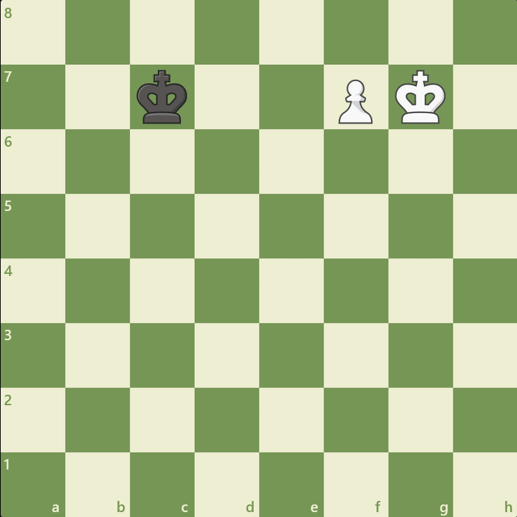
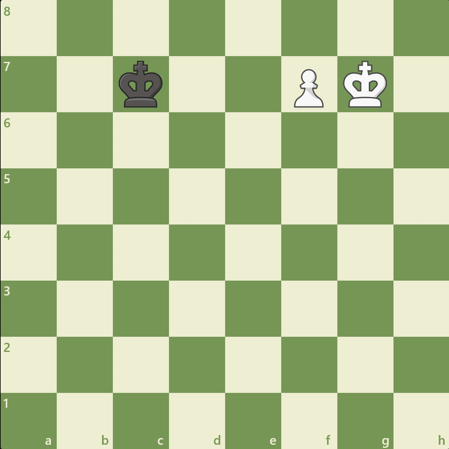

The pawn (♙,♟) is the weakest piece in chess. It is only worth 1 point of material. Each side starts with eight pawns on the player's second rank (7th from black).
The pawn can only move in one square directly forward if a piece does not block it. However, it can move two squares forward if it hasn't been moved yet, and it can capture material one square diagonally in each direction.
A pawn can also promote to any piece other than King when it reaches the first rank (8th for white). Usually, a player will promote their pawn to a queen, also known as queening, of the same color. But there are situations where you need to underpromote to a knight, a rook, or a bishop to prevent stalemate (No legal king moves, and the game is a draw).